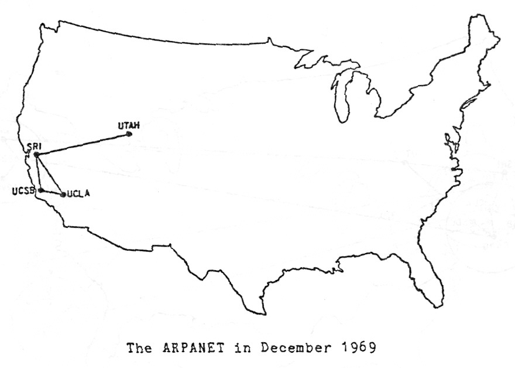

A internet teve suas origens na década de 1960 como uma rede de computadores do
Departamento de Defesa dos EUA, chamada ARPANET (Advanced Research Projects Agency
Network). Originalmente, a ARPANET foi criada para permitir que cientistas e acadêmicos de
diferentes locais físicos compartilhassem informações e colaborassem em pesquisa.

O ARPANET em Dezembro de 1969
Anos 1970 - Protocolos de Comunicação:
Os anos 70 testemunharam o desenvolvimento dos protocolos TCP/IP (Transmission Control
Protocol/Internet Protocol), que permitem a transferência de dados entre computadores em
redes diferentes. A adoção desses protocolos pela ARPANET em 1983 marcou a
operacionalização da internet como a conhecemos hoje.
Anos 1980 - Expansão e Comercialização:
Durante os anos 80, a internet começou a se expandir além do uso acadêmico e militar,
entrando no domínio comercial. Em 1989, a NSF (National Science Foundation) permitiu o
uso comercial da internet, resultando em seu rápido crescimento.
Anos 1990 - Nascimento da World Wide Web:
Em 1991, o CERN (Conselho Europeu para a Pesquisa Nuclear) apresentou ao mundo a World Wide Web, uma rede de hipertexto
acessível ao público e projetada para tornar a internet mais fácil de usar. O primeiro navegador web, chamado Mosaic, foi lançado
em 1993, tornando a Web mais acessível para o usuário comum.
Fim dos anos 1990 - A era do ".com":
No final dos anos 1990, a internet deu lugar à "bolha do ponto com", uma época de especulação de mercado em torno das
empresas de internet. Embora muitas dessas empresas não tenham sobrevivido ao estouro da bolha em 2000-2002, outras, como
Amazon e Google, não apenas sobreviveram, mas se tornaram algumas das maiores empresas do mundo.
Anos 2000 - Redes Sociais e Vídeos Online:
Os anos 2000 foram caracterizados pelo surgimento das redes sociais e do compartilhamento de vídeos online. Sites como
Facebook, YouTube e Twitter foram lançados durante esse período, e o acesso à internet em dispositivos móveis começou a se
tornar cada vez mais comum.
Anos 2010 - A era do Mobile e Cloud Computing:
Os anos 2010 foram marcados pelo crescimento do uso da internet móvel e do cloud computing. Os smartphones se tornaram o
principal meio de acesso à internet para muitas pessoas. Ao mesmo tempo, empresas e indivíduos começaram a usar cada vez mais
a "nuvem" para armazenar dados e rodar aplicações
Anos 2020 - Internet das Coisas e Inteligência Artificial:
Na década de 2020, a internet das coisas (IoT) e a inteligência artificial se tornaram cada vez mais integradas à internet. Hoje, uma
infinidade de dispositivos, de geladeiras a carros, estão conectados à internet, enquanto a inteligência artificial desempenha um
papel importante em áreas como busca na internet, reconhecimento de voz e tradução automática.
Ano 2023 – Desafios atuais:
No entanto, o crescimento da internet também levanta questões importantes sobre privacidade, segurança, desinformação e acesso digital.
Lidar com esses desafios é uma das principais tarefas daqueles que moldam o futuro da internet. E assim chegamos ao presente. A internet
revolucionou a maneira como nos comunicamos, trabalhamos, jogamos e vivemos. É difícil imaginar um mundo sem ela, e sem dúvida o futuro
da internet trará ainda mais mudanças.